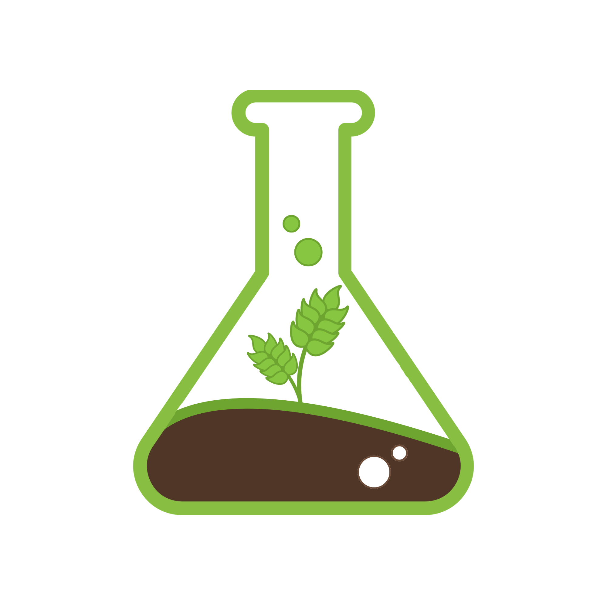

15 Ekim 2026
🌾 Akıllı Tarım & IoT Prototipi Saha Testlerinde
Üniversite ve kırsal gençlik ortaklığıyla geliştirilen sensör tabanlı otonom nem ölçüm ve damla sulama istasyonumuz sahada başarıyla test edilmeye başlandı.

Topraktan Dijitale, Genç Çiftçiden Agro-Girişimciye 🌱⚡
Resmi duyurular, saha atölyeleri, eğitimler ve gençlik buluşmalarımıza anında katılın.
Saha anları, atölyelerimiz, hikayelerimiz ve proje güncellemelerimizi Instagram'dan keşfedin.
Agro-Lab Gençlik İnisiyatifi, Muş merkezli kurulan ve Doğu Anadolu'nun zengin tarımsal potansiyelini 21. yüzyılın dijital yetkinlikleriyle sentezlemeyi hedefleyen dinamik ve bağımsız bir gençlik topluluğudur.
Amacımız; geleneksel ‘Genç Çiftçi’ algısını, teknolojiyle donatılmış ve değer üreten ‘Agro-Girişimci’ kimliğine dönüştürmektir.